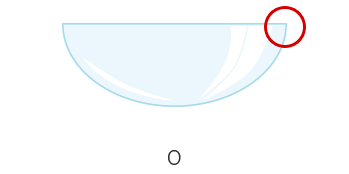
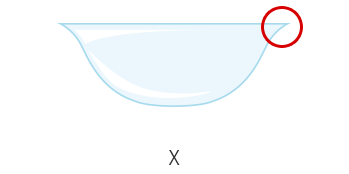

- 
- 
[How to tell the front and back of the contact lens]
B.S. CORPORATION
GUIDE

[How to tell the front and back of the contact lens]
※ Please use your contact lenses properly to protect your precious eyes
1Wash your hands with soap first. Then, rinse your contact lenses in saline solution thoroughly.
2Place one of your lenses on the tip of the right index finger and check if there is anything wrong with it.
3Pull up one of your upper eyelids gently with one hand and pull down the lower eyelid with the other hand.
4Be careful not to blink while doing it.
5Slowly put in the contact lens with the fingertip while watching in the mirror.
6When the contact lens adheres to the eye, release the eyelids slowly to make sure the contact lens does not fall out.
1Wash your hands with soap and dry them with a towel.
2Check where the contact lenses are positioned using the mirror.
3Pull up one of your upper eyelids gently with the right middle finger and pull down the lower eyelid with the left one.
4Pull out the contact lens using the thumb and index fingers
※ If you do not take care of contact lenses properly, it may cause eye diseases. Please store them correctly to protect your eyes.
1Wash your hands with soap and dry them with a towel.
2Place a contact lens on one of your palm and drip one or two drops of contact lens detergent. Then, rinse the contact lenses smoothly with your fingertip for about 20 seconds each.
3Rinse the contact lenses in saline solution.
4Place contact lenses into a clean lens case with storage solution in it.
5Make sure the left and right lenses are not confused with each other and keep the case clean.
1Sterilize your contact lens case once a week, and change it regularly.
2When using saline solution, it is best to follow the product's guidelines, and use it as soon as possible after opening it.
3it is recommended to use dedicated storing solution when storing the contact lenses.
4Place contact lenses into a clean lens case with storage solution in it.
5Remove protein substances at least once a week using protein removal solution.